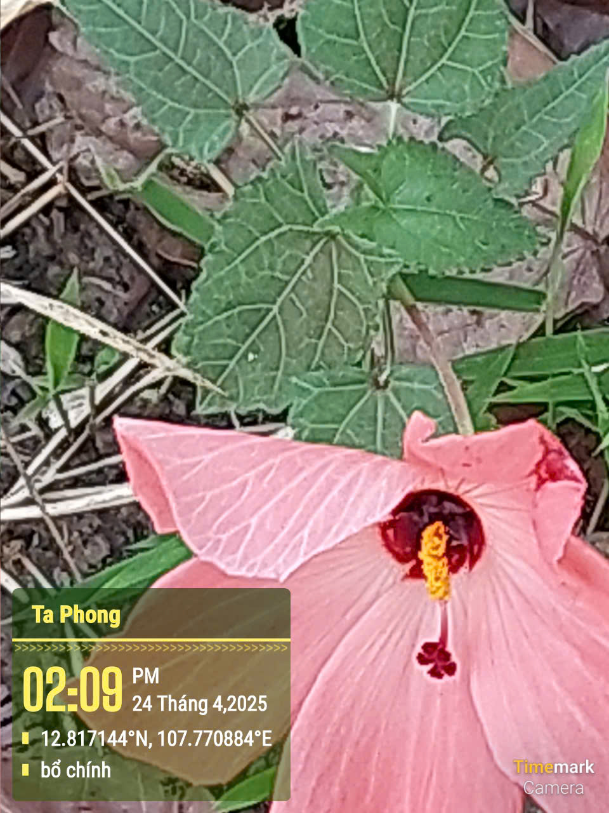
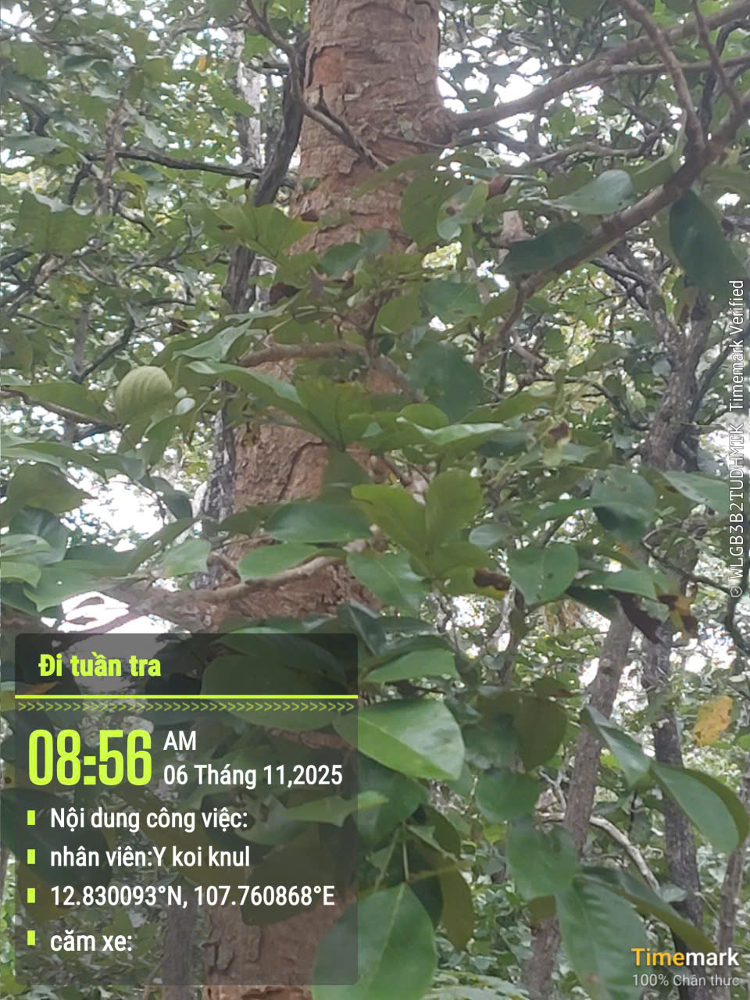
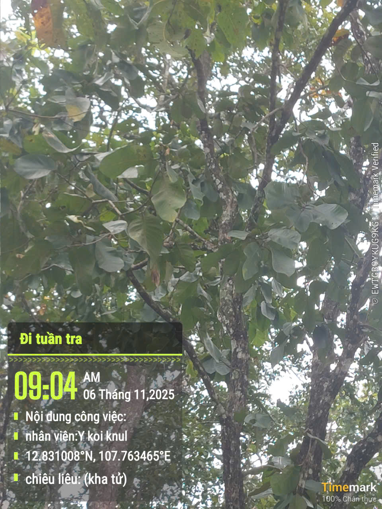
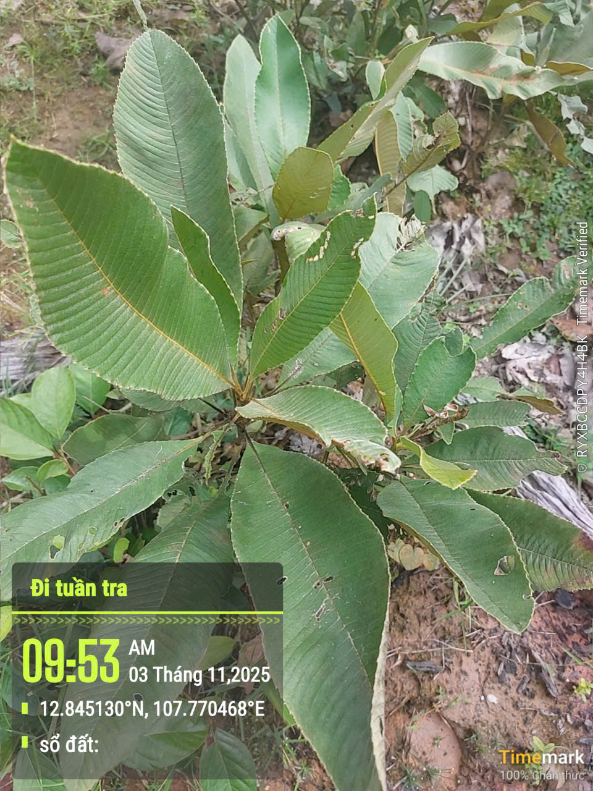
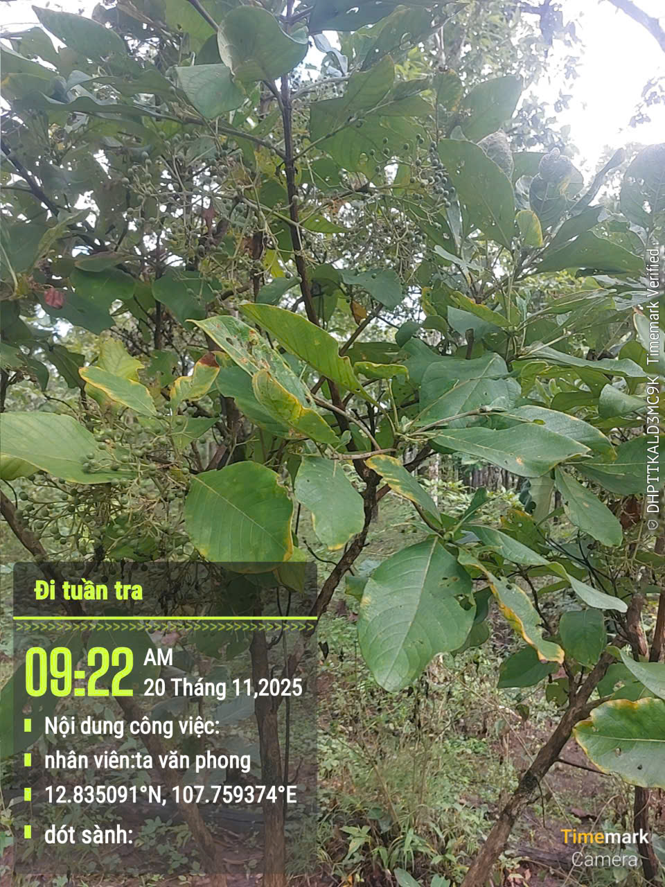
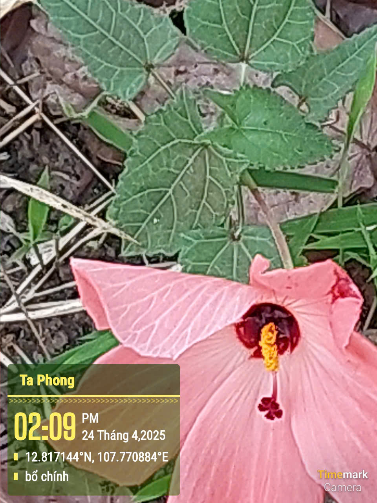
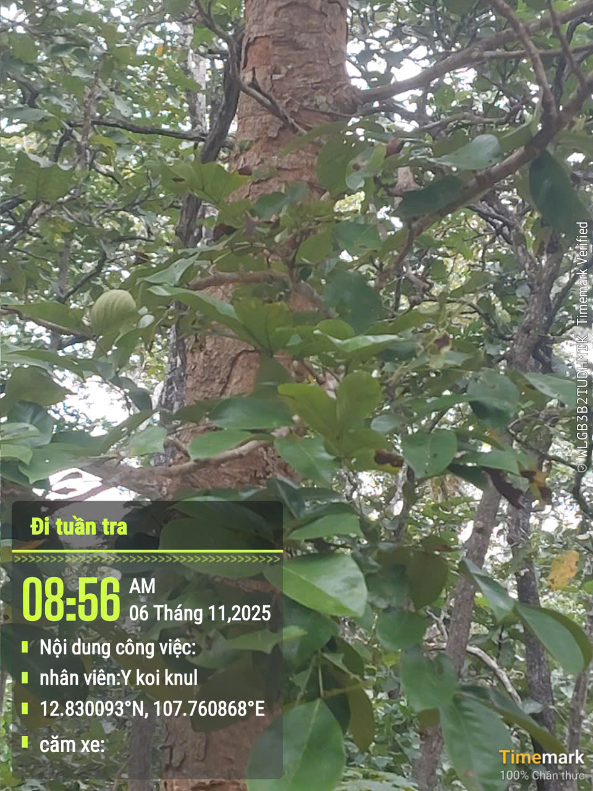
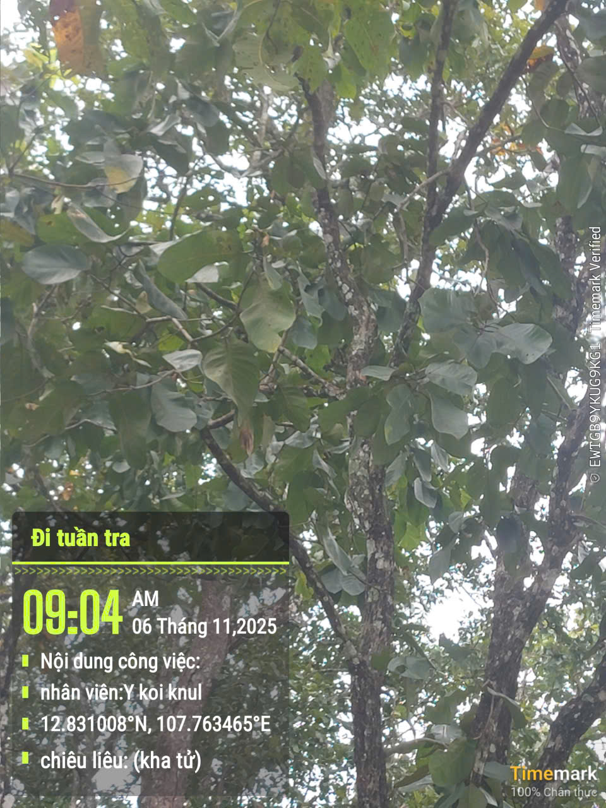
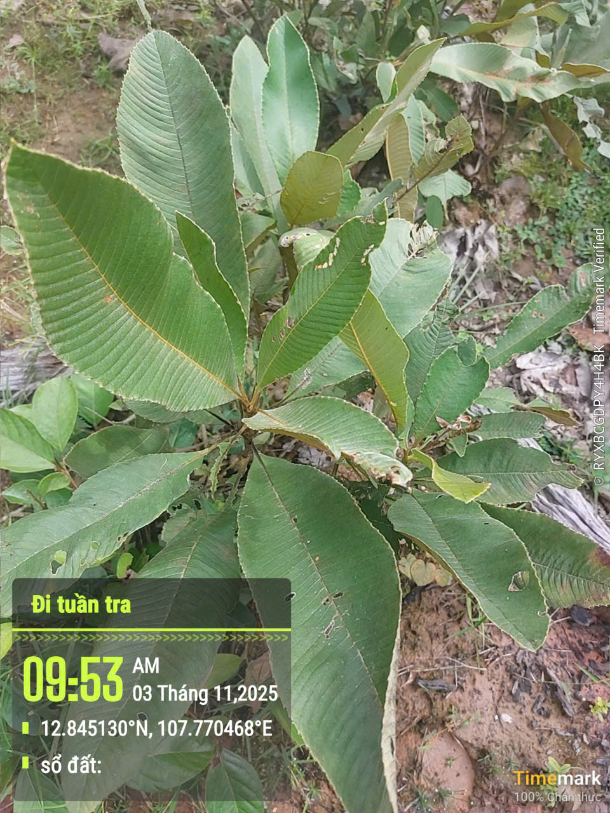
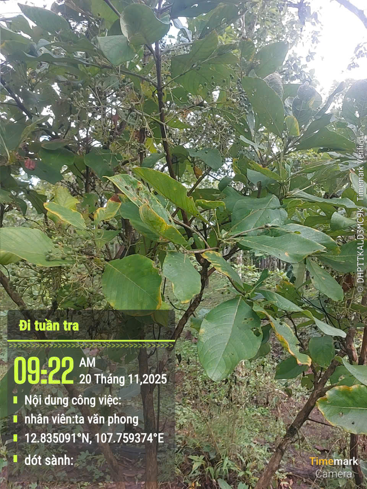

| TÊN CÂY |
BỘ PHẬN DÙNG |
CÔNG DỤNG |
| Tơm trơn/Bán tràng |
Thân, lá, rễ. |
Làm thuốc bổ cho phụ nữ mới sanh, làm thuốc bổ khỏe toàn thân. |
| Hồng bì |
Lá. |
Được dùng làm thuốc bổ có tác dụng giúp ăn ngon, mạnh khỏe. |
| Cốt toái bổ |
Thường lấy phần thân rễ phù mập để làm thuốc |
Chữ gãy xương, đau nhức, bồi bổ thận, trị sỏi thận, đau thận. |
| Tóc tiên/Thiên môn đồng |
Lá và rễ. |
Làm thuốc trị bện ho lâu, ho ra máu. |
| Bồ quân Ấn Độ | Thân, rễ. |
Sử dụng trong nhiều bài thuốc với nhiều công dụng: Làm thuốc cho phụ nữ mới sinh bổ khỏe, trị bệnh cho phụ nữ sau sinh, sốt rét, ho ra máu, bí tiểu tiện. Được sử dụng trong thang thuốc Ma Kông. |
| Gáo nước | Rễ, thân cây.. |
Dùng làm thuốc trị bệnh sốt rét, bệnh thương hàn. |
| Nhàu rừng | Rễ, vỏ rễ, quả, lá.. |
Hỗ trợ điều hòa huyết áp, chữa đau nhức xương khớp. |
| An xoa | Toàn cây (thân, lá, rễ) |
Thanh nhiệt, giải độc gan, hỗ trợ điều trị viêm gan B, xơ gan, ung thư gan. Giúp ăn ngon, tiêu hóa tốt, giảm mỡ máu, men gan cao |
| Gối hạc | Rễ. |
Chữa đau nhức khớp xương, tê thấp, đau bụng, rong kinh... |
| Sâm cau | Thân rễ (củ sâm). |
Bổ thận, tráng dương, tăng cường sinh lực, chữa đau lưng mỏi gối. |
| Mật nhân | Rễ, vỏ thân, gốc cây |
Bổ thận, tráng dương, kích thích tiêu hóa, hỗ trợ điều trị đau nhức xương khớp, tê thấp. |
| Thiên niên kiện | Thân rễ |
Chữa thấp khớp, đau nhức xương, phong thấp |
| Thổ phục linh | Thân rễ (củ). |
Trừ thấp, hoạt huyết. Hỗ trợ chữa phong thấp, đau nhức xương khớp, viêm gan, nóng trong, táo bón, dâu lưng, tê bì chi dưới, mụn nhọt, viêm da, mẩn ngứa,… |
| Xương khỉ | Lá và thân. |
Hỗ trợ điều trị ung thư, u bướu, gan nhiễm mỡ, men gan cao, đau nhức xương khớp, sưng viêm, thấp khớp,… |
| Sâm bố chính | Rễ củ (củ). |
Bổ khí, dưỡng huyết, tăng cường sinh lực, hỗ trợ suy nhược cơ thể. |
| Hoàng kì nam | Thân hoặc rễ.. |
Tăng cường miễn dịch, hỗ trợ điều trị viêm gan, mệt mỏi, suy nhược cơ thể, tăng cường tuần hoàn máu, phục hồi thể lực sau ốm. |
| Địa liền | Thân rễ (củ) hoặc lá |
Trị đau nhức xương khớp, phong thấp, cảm lạnh, ho, tiêu hóa kém. |
| Dứa dại | Rễ, lá, quả. |
Chữa viêm gan, nóng gan, sỏi thận, tiểu buốt, viêm họng. |
| Cây một lá | Toàn bộ cây, củ |
Chữa lao phổi, làm cho phổi mát, dùng ngoài giã nát đắp lên nơi đau, mụn nhọt. |
| Chè Long | Toàn cây (thân, rễ, lá). |
Dây leo cao, thường mọc thành bụi, không lông, có mủ trắng. Lá lúc non đỏ, mọc đối, phiến lá bầu dục tròn dài, mỏng, không lông, mặt trên xanh bóng. |
| Căm xe | Gỗ cây, vỏ cây, rễ cây, hay nhựa trong thân cây tươi đốt lên. . |
Cây được sử dụng trong nhiều bài thuốc khác nhau: dùng làm thuốc bổ cho phụ nữ sau sinh hay băng huyết của phụ nữ, dùng điều trị sốt rét, dùng chung với các loài khác để trị tê liệt chân tay, điều trị bệnh phù thủng. |
| Chiêu liêu (kha tử) | Quả khô. |
Chữa tiêu chảy, chữa lỵ kinh niên, ho mất tiếng, ho lâu ngày. |
| Sổ đất | Rễ, thân |
Làm thuốc cho phụ nữ sau khi sinh được khỏe mạnh hay trị một số bệnh như băng huyết, tan huyết.. |
| Dót sành | Rễ, thân. |
Được dùng riêng hay dùng chung với các loài cây thuốc khác trong các bài thuốc cho phụ nữ sau khi sinh khỏe mạnh đi lại được ngay, chống ngộ độc.. |
 








